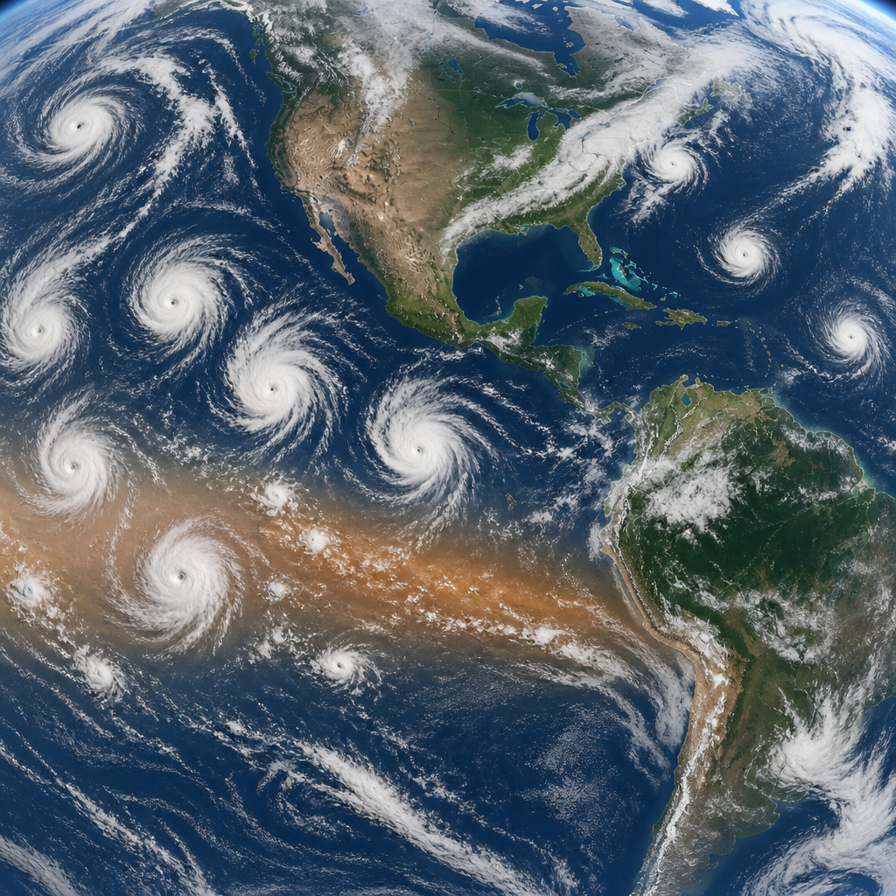
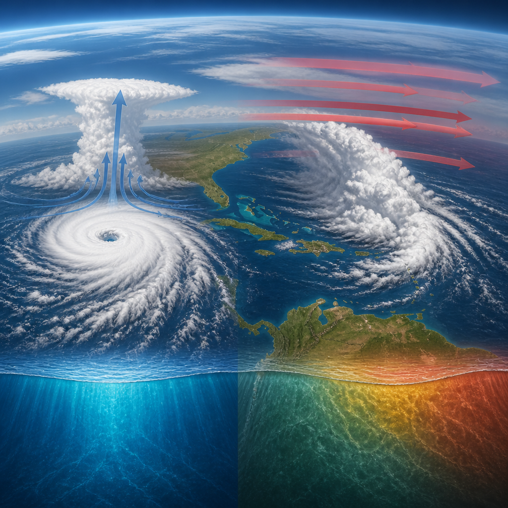

Nel 2026 l’Atlantico è rimasto sotto la media, mentre il Pacifico ha registrato la sua stagione più attiva secondo l’energia dei cicloni.
La stagione degli uragani del 2026 ha mostrato un contrasto netto fra due bacini oceanici. Nell’Atlantico l’attività è stata inferiore alla media; nel Pacifico orientale e centrale, invece, è stata molto intensa. Per NOAA, questa differenza riflette l’influenza di un El Niño molto forte, fra i più intensi mai osservati.
El Niño è un fenomeno naturale caratterizzato da temperature della superficie del mare superiori alla media nel Pacifico equatoriale centrale e orientale, accompagnate da variazioni dei venti e delle precipitazioni. Può modificare le condizioni meteorologiche in molte parti del mondo, comprese quelle che favoriscono la formazione e il rafforzamento dei cicloni tropicali.
Nell’Atlantico, El Niño tende ad aumentare il wind shear alle alte quote, cioè una variazione del vento con la quota che può disturbare un ciclone in sviluppo e renderne più difficile l’organizzazione e l’intensificazione. Nel Pacifico orientale e centrale, al contrario, El Niño crea in genere condizioni più favorevoli allo sviluppo dei cicloni tropicali.
Il risultato è stato evidente nei numeri stagionali. Nell’Atlantico si sono formate 10 tempeste con nome, contro una media di 14. Una sola, Isaias, è diventata un uragano; in una stagione media gli uragani sono sette. Isaias è stato anche l’unico uragano maggiore della stagione, con venti massimi sostenuti di 120 miglia orarie. Un uragano maggiore è un ciclone di categoria 3 o superiore.
La stagione atlantica era iniziata con la tempesta tropicale Arthur, formatasi vicino alla costa del Texas. Pur essendo stata di breve durata, i suoi resti hanno contribuito a piogge intense e diffuse, inondazioni, numerosi tornado e altro maltempo grave nel sud-est degli Stati Uniti. In seguito Bertha, una tempesta tropicale soggetta a forte wind shear, ha portato raffiche, mare mosso e inondazioni costiere da lievi a moderate dalla Florida alla Louisiana.
L’episodio più rilevante dell’Atlantico è stato Isaias, che ha raggiunto la terraferma vicino a Destin, in Florida, come uragano di categoria 2. Ha prodotto una significativa mareggiata da tempesta a Panama City Beach, piogge capaci di causare allagamenti e raffiche dannose su un’ampia parte del sud-est degli Stati Uniti. La sua formazione, il 7 ottobre, è stata preliminarmente indicata come la più tardiva per il primo uragano atlantico della stagione dall’inizio dell’era satellitare.

Nel Pacifico orientale sono state osservate 20 tempeste con nome: la media stagionale è 15. Dieci sono diventate uragani e otto hanno raggiunto l’intensità di uragano maggiore, a fronte di medie rispettivamente di otto e quattro. Genevieve, Lowell e Polo si sono rapidamente intensificati fino alla categoria 5. L’intensificazione rapida indica un aumento molto veloce dell’intensità di un ciclone.
Polo è stato il ciclone più intenso della stagione. Dopo essersi sviluppato nel Pacifico orientale, ha raggiunto terra nella Bassa California come uragano di categoria 2 e ha effettuato un secondo approdo vicino a Guaymas, in Messico, come categoria 1. Ha interessato le regioni costiere del Messico e della Bassa California con venti dannosi, mareggiata da tempesta e forti piogge. Alla massima intensità, la sua pressione centrale osservata è stata la seconda più bassa mai registrata nel bacino del Pacifico orientale.
Anche il Pacifico centrale, che comprende le isole Hawaii, ha avuto attività superiore alla media. Sono stati osservati otto cicloni tropicali, cinque dei quali arrivati dal Pacifico orientale. Cinque cicloni nel bacino sono diventati uragani e tre hanno raggiunto intensità maggiore. Lala, Lowell e Nolo hanno avuto effetti diretti sulle Hawaii, con venti dannosi, onde costiere distruttive e inondazioni catastrofiche in alcune aree.
Lala ha portato impatti sulla Big Island e nella contea di Maui, poi su Oahu e nella contea di Kauai. Lowell ha interessato le contee di Kauai e Maui. Nolo, pur senza raggiungere terra alle Hawaii, è passato abbastanza vicino da provocare due fasi di inondazioni. Nel complesso, le Hawaii sono rimaste per 228 ore sotto un’allerta o un avviso per ciclone tropicale, il valore più alto nei dati disponibili dal 1985.
Per valutare l’attività complessiva, NOAA usa anche l’Accumulated Cyclone Energy, o ACE: un indicatore che combina intensità e durata di tutte le tempeste tropicali e degli uragani della stagione. Considerati insieme, Pacifico centrale e orientale hanno raggiunto il valore ACE più alto mai registrato: 359,5, oltre il precedente record di 318 del 2018.
I satelliti geostazionari GOES East e GOES West hanno fornito immagini continue dei sistemi in sviluppo sull’Atlantico e sul Pacifico, aiutando a seguirne movimento e struttura. I satelliti in orbita polare NOAA-20 e NOAA-21 hanno invece raccolto osservazioni dettagliate sulla struttura, l’intensità e l’ambiente circostante delle tempeste.
La stagione ha visto anche l’impiego di tre nuovi modelli operativi basati sulla superintelligenza, usati per fornire informazioni più tempestive e accurate su traiettoria e intensità. Il National Hurricane Center ha inoltre introdotto una nuova grafica del cono di previsione, includendo allerte e avvisi per tempesta tropicale e uragano anche nelle zone interne, non solo lungo la costa.
El Niño ha contribuito a una stagione atlantica più tranquilla della media e a un Pacifico eccezionalmente attivo. Nell’Atlantico Isaias è stato l’unico uragano; nel Pacifico orientale e centrale l’attività combinata ha stabilito un record secondo l’energia complessiva dei cicloni. La stagione ufficiale di Atlantico e Pacifico orientale termina il 30 novembre.
Questo articolo l'hai letto sul blog di Meteo News Radar: un'app che ti mostra da dove vengono i numeri, invece di limitarsi a dartelo. E ogni mattina ne trovi uno nuovo come questo.